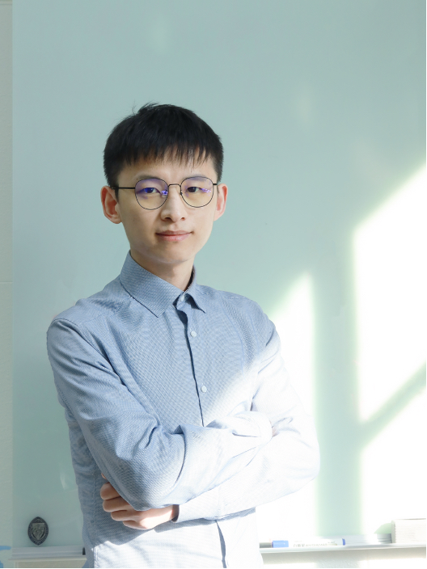

 Starting from September, 2019, I join the NASA Astrobiology Institute team (ENGIMA) team in Rutgers University as postdoctoral researcher. I will work mainly with Profs. Nathan Yee and Paul Falkowski on the habitability, origin, and early evolution of life on the early Earth or other water-bearing planets. I got my PhD of Geochemistry with Prof. Dimitri A. Sverjensky at Dept. Earth & Planetary Sciences, Johns Hopkins University in November, 2016 (degree awarded in May, 2017). During my PhD, I also worked closely with Dr. Robert M. Hazen as the predoctoral mentor at Geophysical Laboratory, Carnegie Institution of Washington (GL-CIW). After graduation, I went to France as postdoctoral researcher (2016/12 - 2019/08), working with Prof. Isabelle Daniel at Laboratoire de géologie de Lyon, Université Claude Bernard Lyon1 and École normale supérieure de Lyon.
I have broad research interests, including early Earth surface geochemistry, origin and evolution of life on Earth, habitability of life on other water-bearing planets, and aqueous geochemistry at elevated temperatures and pressures. I like playing ping-pong, swimming, backpacking, and cooking.
Department of Marine and Costal Sciences, Office 205E,
271 Dudley Rd., Office 205E in Marine Sciences Bldg., New Brunswick, NJ 08901-8520, USA
haojihua [at] gmail [dot] com